Overview of all datasets
08 July, 2020
Last updated: 2020-07-08
Checks: 7 0
Knit directory: Epilepsy19/
This reproducible R Markdown analysis was created with workflowr (version 1.6.1). The Checks tab describes the reproducibility checks that were applied when the results were created. The Past versions tab lists the development history.
Great! Since the R Markdown file has been committed to the Git repository, you know the exact version of the code that produced these results.
Great job! The global environment was empty. Objects defined in the global environment can affect the analysis in your R Markdown file in unknown ways. For reproduciblity it’s best to always run the code in an empty environment.
The command set.seed(20200706) was run prior to running the code in the R Markdown file. Setting a seed ensures that any results that rely on randomness, e.g. subsampling or permutations, are reproducible.
Great job! Recording the operating system, R version, and package versions is critical for reproducibility.
Nice! There were no cached chunks for this analysis, so you can be confident that you successfully produced the results during this run.
Great job! Using relative paths to the files within your workflowr project makes it easier to run your code on other machines.
Great! You are using Git for version control. Tracking code development and connecting the code version to the results is critical for reproducibility.
The results in this page were generated with repository version 856ddcf. See the Past versions tab to see a history of the changes made to the R Markdown and HTML files.
Note that you need to be careful to ensure that all relevant files for the analysis have been committed to Git prior to generating the results (you can use wflow_publish or wflow_git_commit). workflowr only checks the R Markdown file, but you know if there are other scripts or data files that it depends on. Below is the status of the Git repository when the results were generated:
Ignored files:
Ignored: .Rhistory
Ignored: .Rproj.user/
Ignored: analysis/fig_go.nb.html
Ignored: analysis/fig_neun.nb.html
Ignored: analysis/fig_overview.nb.html
Ignored: analysis/fig_smart_seq.nb.html
Ignored: analysis/fig_summary.nb.html
Ignored: analysis/fig_type_distance.nb.html
Ignored: analysis/gene_testing.nb.html
Ignored: analysis/prep_alignment.nb.html
Ignored: cache/con_allen.rds
Ignored: cache/con_filt_cells.rds
Ignored: cache/con_filt_samples.rds
Ignored: cache/con_ss.rds
Ignored: cache/count_matrices.rds
Ignored: cache/p2s/
Ignored: output/
Untracked files:
Untracked: DESCRIPTION
Untracked: NAMESPACE
Untracked: R/
Untracked: analysis/prep_alignment.Rmd
Untracked: analysis/prep_filtration.Rmd
Untracked: code/
Untracked: gene_modules/
Untracked: man/
Untracked: metadata/
Unstaged changes:
Modified: Epilepsy19.Rproj
Modified: README.md
Modified: analysis/index.Rmd
Note that any generated files, e.g. HTML, png, CSS, etc., are not included in this status report because it is ok for generated content to have uncommitted changes.
These are the previous versions of the repository in which changes were made to the R Markdown (analysis/fig_overview.Rmd) and HTML (docs/fig_overview.html) files. If you’ve configured a remote Git repository (see ?wflow_git_remote), click on the hyperlinks in the table below to view the files as they were in that past version.
| File | Version | Author | Date | Message |
|---|---|---|---|---|
| Rmd | 964ac20 | viktor_petukhov | 2020-07-06 | Overview notebook |
# library(Epilepsy19)
library(ggplot2)
library(magrittr)
library(Matrix)
library(pbapply)
library(conos)
library(CellAnnotatoR)
library(readr)
library(tidyverse)
library(pheatmap)
theme_set(theme_bw())
devtools::load_all()
outPath <- function(...) OutputPath("overview", ...)
theme_borders <- theme(panel.border=element_blank(), axis.line=element_line(size=0.5, color = "black"))Load data
con <- read_rds(CachePath("con_filt_cells.rds"))
sample_info <- MetadataPath("sample_info.csv") %>% read_csv()
sex_per_sample <- sample_info %$% setNames(Sex, Alias)cm_per_samp_raw <- lapply(con$samples, function(p2) p2$misc$rawCounts)
cm_per_samp_raw$NeuNNeg <- CachePath("count_matrices.rds") %>% read_rds() %>% .$NeuN %>% t()
med_umis_per_samp <- pblapply(cm_per_samp_raw, Matrix::rowSums) %>% sapply(median)
med_genes_per_samp <- pblapply(cm_per_samp_raw, getNGenes) %>% sapply(median)
n_cells_per_samp <- sapply(cm_per_samp_raw, nrow)
mean(med_genes_per_samp)[1] 2304.25cm_merged <- con$getJointCountMatrix()
sample_per_cell <- con$getDatasetPerCell()
condition_per_sample <- ifelse(grepl("E", levels(sample_per_cell)), "epilepsy", "control") %>%
setNames(levels(sample_per_cell))
annotation_by_level <- read_csv(MetadataPath("annotation.csv")) %>%
filter(cell %in% rownames(cm_merged))
annotation_by_level %<>% .[, 2:ncol(.)] %>% lapply(setNames, annotation_by_level$cell)
annotation <- as.factor(annotation_by_level$l4)
neuron_type_per_type <- ifelse(grepl("L[2-6].+", unique(annotation)), "Excitatory", "Inhibitory") %>%
setNames(unique(annotation))
samp_per_cond <- sample_info$Alias %>% split(condition_per_sample[.])
type_order <- names(neuron_type_per_type)[order(neuron_type_per_type, names(neuron_type_per_type))]
annotation <- factor(annotation, levels=type_order)
condition_colors <- c("#0571b0", "#ca0020")Annotation hierarchy
parseMarkerFile(MetadataPath("neuron_markers.txt")) %>%
createClassificationTree() %>% plotTypeHierarchy()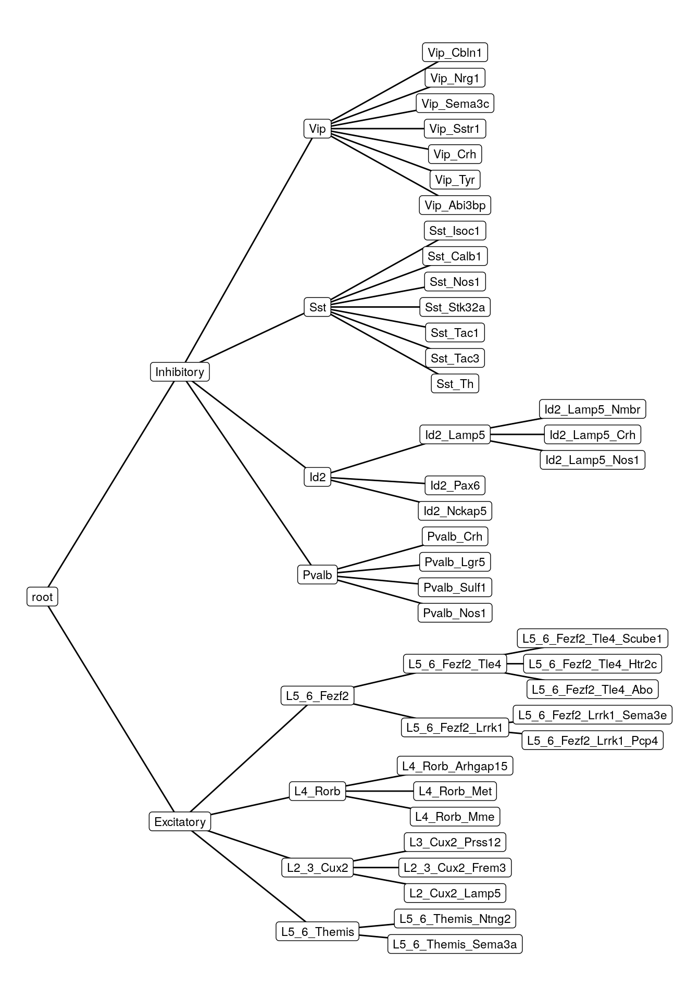
ggsave(outPath("cell_type_hierarchy.pdf"))Joint embedding
Annotation
gg_annot <- con$plotGraph(groups=annotation, shuffle.colors=T, font.size=c(2, 3),
size=0.1, alpha=0.05, raster=T, raster.dpi=120) +
theme(panel.grid=element_blank())
gg_annot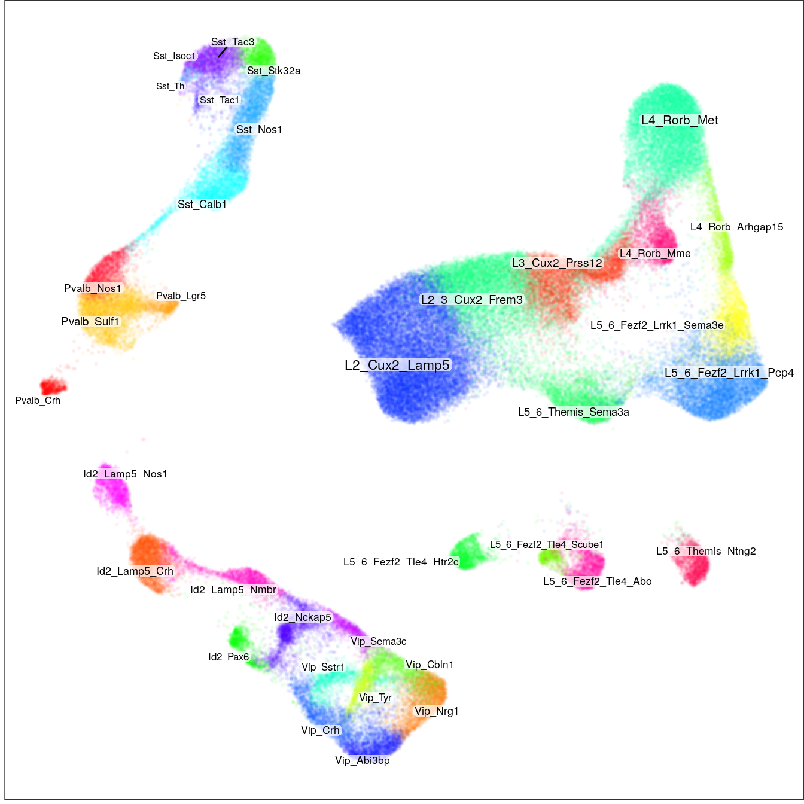
ggsave(outPath("annotation_large.pdf"))ggs <- plotAnnotationByLevels(con$embedding, annotation_by_level, size=0.1, font.size=c(2, 3), shuffle.colors=T,
raster=T, raster.dpi=120, raster.width=4, raster.height=4, build.panel=F) %>%
lapply(`+`, theme(plot.title=element_blank(), plot.margin=margin()))
cowplot::plot_grid(plotlist=ggs, ncol=2)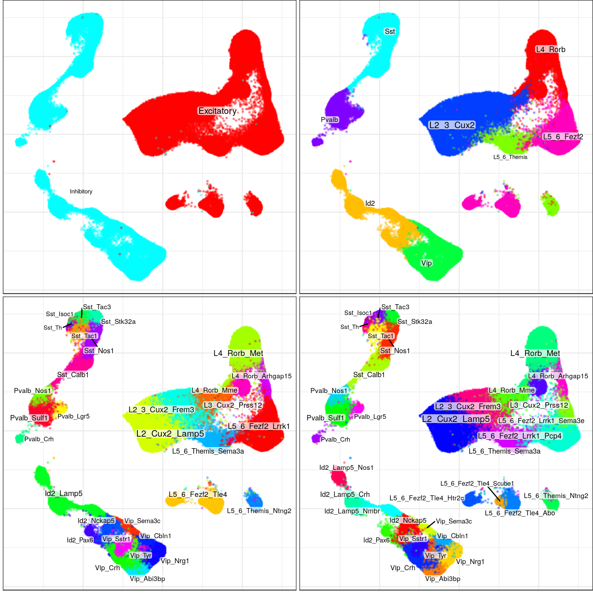
ggsave(outPath("hierarchical_annotation.pdf"), cowplot::plot_grid(plotlist=ggs, ncol=1), width=4, height=16)gg_ind_anns <- lapply(samp_per_cond, function(ns)
conos:::plotSamples(con$samples[ns] %>% setNames(gsub("C", "control ", gsub("E", "epilepsy ", names(.)))),
groups=annotation, embedding.type="UMAP", ncol=2, size=0.1, adj.list=list(theme(plot.margin=margin())),
font.size=c(1.5, 2.5), raster=T, raster.dpi=120, raster.width=4, raster.height=3))
ggsave(outPath("individual_annotation_cnt.pdf"), gg_ind_anns$control, width=8, height=15)
ggsave(outPath("individual_annotation_ep.pdf"), gg_ind_anns$epilepsy, width=8, height=15)
gg_ind_anns$control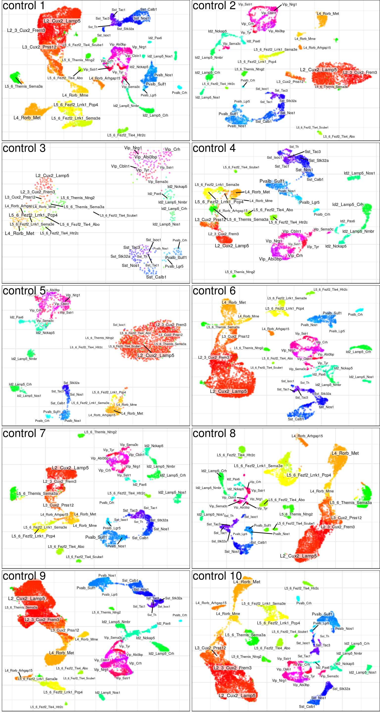
$epilepsy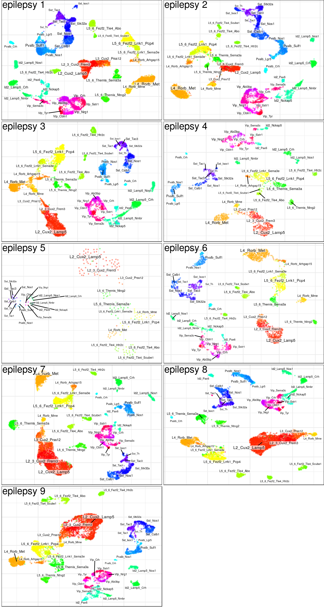
Groups
Condition:
condition_per_cell <- condition_per_sample[as.character(con$getDatasetPerCell())] %>%
setNames(names(sample_per_cell))
con$plotGraph(groups=condition_per_cell, mark.groups=F, size=0.05, alpha=0.05, show.legend=T,
legend.pos=c(1,1), raster=T, raster.dpi=150, raster.width=7, raster.height=7) +
gg_annot$layers[[2]] +
scale_size_continuous(range=c(2, 3), trans='identity', guide='none') +
scale_color_manual(values=condition_colors) +
guides(color=guide_legend(override.aes=list(size=2, alpha=1), title="Condition")) +
theme(panel.grid=element_blank())
ggsave(outPath("condition_per_cell.pdf"))Age:
Age information was hidden for the data security purposes
age_per_cell <- age_per_sample[sample_per_cell] %>% setNames(names(sample_per_cell))
age_subsets <- age_per_cell %>% split(condition_per_cell[names(.)]) %>% c(list(all=age_per_cell))
ggs_age <- lapply(names(age_subsets), function(n) {
t.g <- con$plotGraph(colors=age_subsets[[n]], color.range=range(age_per_cell), size=0.05,
alpha=0.1, plot.na=F, show.legend=T, legend.pos=c(1,1),
raster=T, raster.dpi=150, raster.width=7, raster.height=7) +
gg_annot$layers[[2]] +
scale_size_continuous(range=c(2, 3), trans='identity', guide='none') +
scale_color_distiller("Age", palette="RdYlBu") +
theme(panel.grid=element_blank())
ggsave(outPath(paste0("age_", n, ".pdf")), t.g)
t.g
})
ggs_ageSex:
sex_per_cell <- sex_per_sample[sample_per_cell] %>% setNames(names(sample_per_cell))
sex_subsets <- sex_per_cell %>% split(condition_per_cell[names(.)]) %>% c(list(all=sex_per_cell))
ggs_sex <- lapply(names(sex_subsets), function(n) {
t.g <- con$plotGraph(groups=sex_subsets[[n]], size=0.05, alpha=0.05, plot.na=F,
mark.groups=F, show.legend=T, legend.pos=c(1,1),
raster=T, raster.dpi=150, raster.width=7, raster.height=7) +
gg_annot$layers[[2]] +
scale_size_continuous(range=c(2, 3), trans='identity', guide='none') +
scale_color_manual(values=c("#7b3294", "#008837")) +
guides(color=guide_legend(override.aes=list(size=2, alpha=1), title="Sex")) +
theme(panel.grid=element_blank())
ggsave(outPath(paste0("sex_", n, ".pdf")), t.g)
t.g
})
ggs_sex[[1]]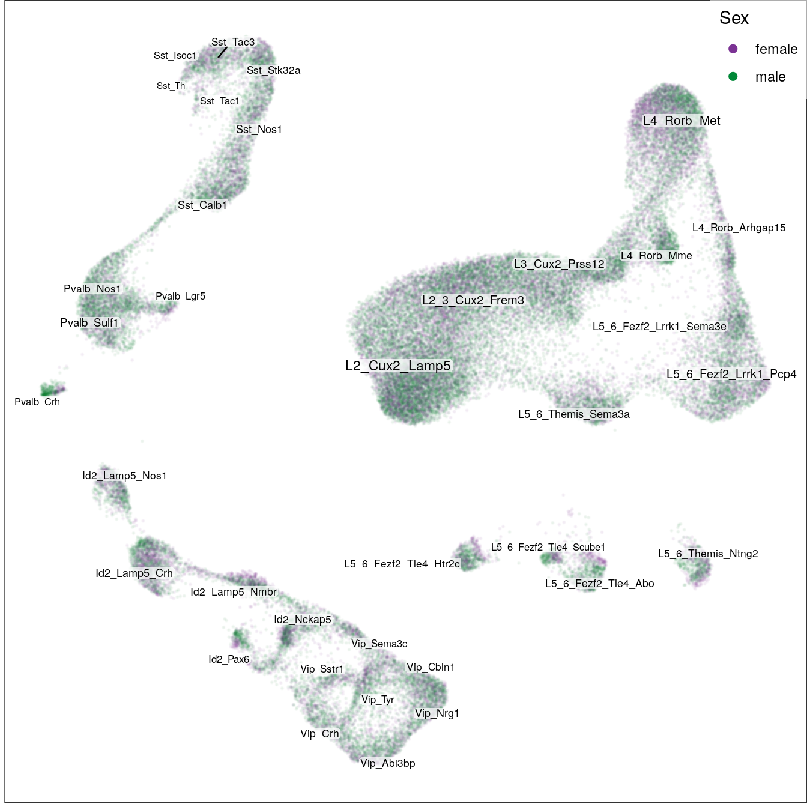
[[2]]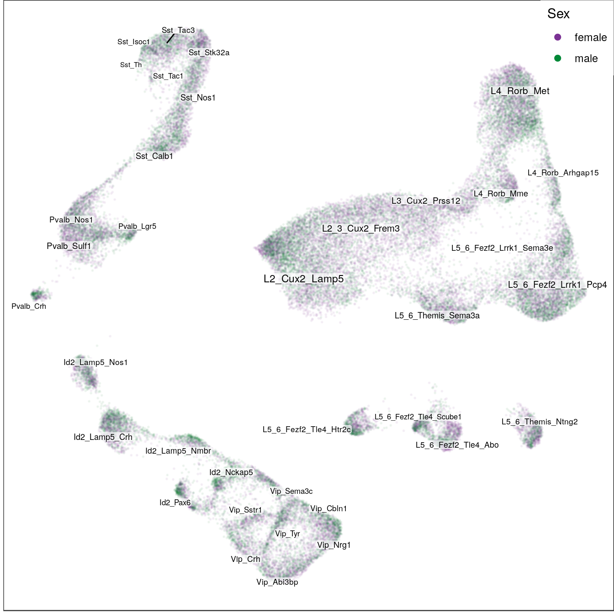
[[3]]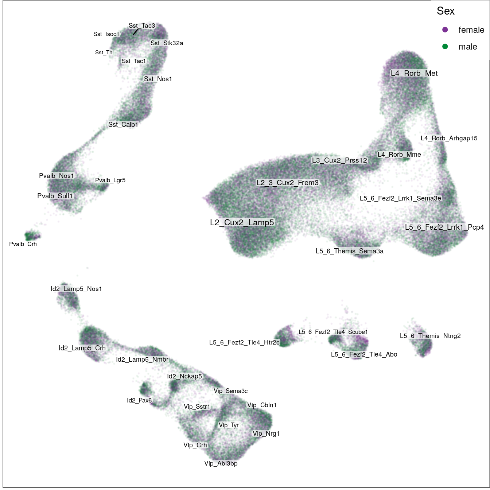
Cell type presence
con$getDatasetPerCell() %>% table(annotation[names(.)]) %>% as.matrix() %>%
`/`(rowSums(.)) %>% `*`(100) %>% round(2) %>% as.data.frame.matrix() %>%
as_tibble(rownames="Sample") %>% mutate(Sample=factor(Sample, levels=sample_info$Alias)) %>%
arrange(Sample) %>% write_csv(outPath("cell_type_presence_by_sample.csv"))sample_per_cell <- con$getDatasetPerCell() %>% factor(levels=unlist(samp_per_cond))
sf_per_cond <- unique(condition_per_sample) %>% setNames(., .) %>% lapply(function(n)
sample_per_cell[condition_per_sample[as.character(sample_per_cell)] == n])
gg_type_persence <- lapply(sf_per_cond, function(sf)
plotClusterBarplots(groups=annotation, sample.factor=sf, show.entropy=F, show.size=F) +
labs(x="", y="Fraction of cells") + scale_y_continuous(expand=c(0, 0)) +
theme(axis.text.x=element_text(angle=90, hjust=1, vjust=0.5), legend.key.height=unit(12, "pt")) +
scale_fill_manual(values=sample(RColorBrewer::brewer.pal(length(levels(sf)), "Paired")))
)
cowplot::plot_grid(plotlist=gg_type_persence, ncol=1, labels=c("Control", "Epilepsy"), label_x=0.04, label_y=0.98)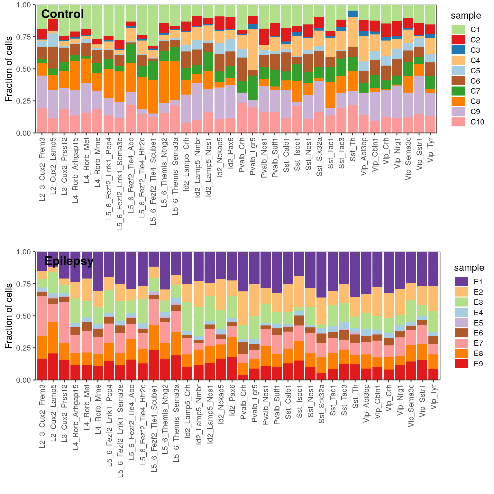
ggsave(outPath("cell_type_presence_by_sample.pdf"))p_df <- table(Sample=sample_per_cell) %>% as.data.frame() %>%
mutate(Condition=condition_per_sample[as.character(Sample)])
ggplot(p_df) +
geom_bar(aes(x=Sample, y=Freq, fill=Condition), stat="identity") +
scale_fill_manual(values=alpha(condition_colors, 0.75)) +
scale_y_continuous(expand=expand_scale(c(0, 0.05))) +
labs(x="", y="Number of cells") +
theme(legend.position="none", panel.grid.major.x=element_blank()) +
theme_borders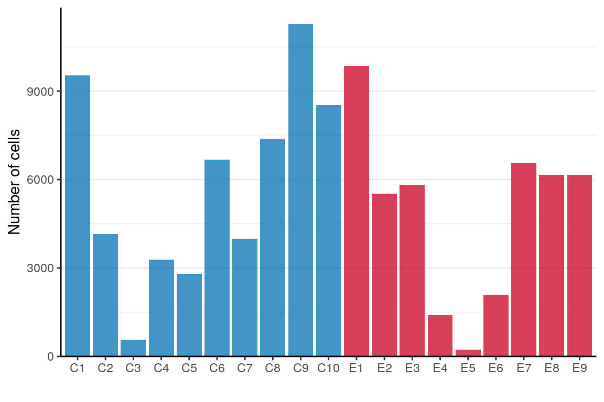
ggsave(outPath("n_cells_per_sample.pdf"))expected_frac_per_type <- table(annotation[names(sample_per_cell[grep("C", sample_per_cell)])]) %>% `/`(sum(.)) %>%
as.matrix() %>% .[,1]
has_low_frac <- table(sample_per_cell, annotation[names(sample_per_cell)]) %>% as.matrix() %>%
`/`(rowSums(.)) %>% t() %>% `<`(expected_frac_per_type * 0.1)
colSums(has_low_frac) C1 C2 C3 C4 C5 C6 C7 C8 C9 C10 E1 E2 E3 E4 E5 E6 E7 E8 E9
0 1 0 0 4 0 0 5 0 0 0 0 0 0 8 0 0 0 0 rowMeans(has_low_frac) L2_3_Cux2_Frem3 L2_Cux2_Lamp5 L3_Cux2_Prss12
0.00000000 0.00000000 0.00000000
L4_Rorb_Arhgap15 L4_Rorb_Met L4_Rorb_Mme
0.05263158 0.00000000 0.00000000
L5_6_Fezf2_Lrrk1_Pcp4 L5_6_Fezf2_Lrrk1_Sema3e L5_6_Fezf2_Tle4_Abo
0.00000000 0.00000000 0.00000000
L5_6_Fezf2_Tle4_Htr2c L5_6_Fezf2_Tle4_Scube1 L5_6_Themis_Ntng2
0.00000000 0.00000000 0.00000000
L5_6_Themis_Sema3a Id2_Lamp5_Crh Id2_Lamp5_Nmbr
0.00000000 0.00000000 0.00000000
Id2_Lamp5_Nos1 Id2_Nckap5 Id2_Pax6
0.00000000 0.00000000 0.00000000
Pvalb_Crh Pvalb_Lgr5 Pvalb_Nos1
0.10526316 0.15789474 0.00000000
Pvalb_Sulf1 Sst_Calb1 Sst_Isoc1
0.00000000 0.00000000 0.10526316
Sst_Nos1 Sst_Stk32a Sst_Tac1
0.00000000 0.00000000 0.05263158
Sst_Tac3 Sst_Th Vip_Abi3bp
0.00000000 0.10526316 0.10526316
Vip_Cbln1 Vip_Crh Vip_Nrg1
0.00000000 0.10526316 0.05263158
Vip_Sema3c Vip_Sstr1 Vip_Tyr
0.00000000 0.05263158 0.05263158 has_few_cells <- table(sample_per_cell, annotation[names(sample_per_cell)]) %>% `<`(5)
p_df <- rowSums(has_few_cells) %>% as_tibble(rownames="Sample") %>%
mutate(Condition=condition_per_sample[as.character(Sample)],
Sample=factor(Sample, levels=levels(sample_per_cell)))
ggplot(p_df) +
geom_bar(aes(x=Sample, y=value, fill=Condition), stat="identity") +
scale_fill_manual(values=alpha(condition_colors, 0.75)) +
scale_y_continuous(expand=expansion(c(0, 0.05))) +
labs(x="", y="Number of subtypes with <5 nuclei") +
theme(legend.position="none", panel.grid.major.x=element_blank()) +
theme_borders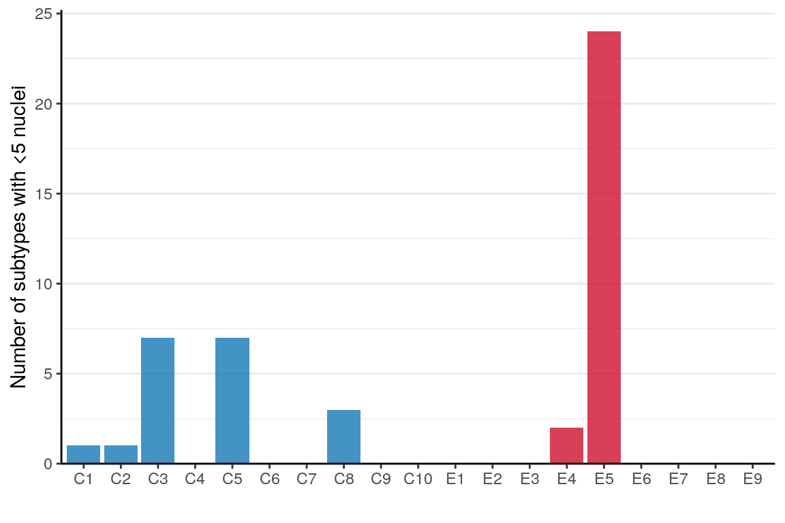
ggsave(outPath("n_missed_types_per_sample.pdf"))p_df <- (1 - colMeans(has_few_cells)) %>% as_tibble(rownames="Type") %>%
mutate(NeuronType=neuron_type_per_type[as.character(Type)], Type=factor(Type, levels=type_order))
ggplot(p_df) +
geom_bar(aes(x=Type, y=value, fill=NeuronType), stat="identity") +
geom_hline(aes(yintercept=0.9)) +
scale_fill_brewer(palette="Set2") +
scale_y_continuous(expand=expansion(c(0, 0))) +
labs(x="", y="Fraction of samples\n with >= 5 nuclei") +
theme(legend.position="none", panel.grid.major.x=element_blank(),
axis.text.x=element_text(angle=90, hjust=1, vjust=0.5))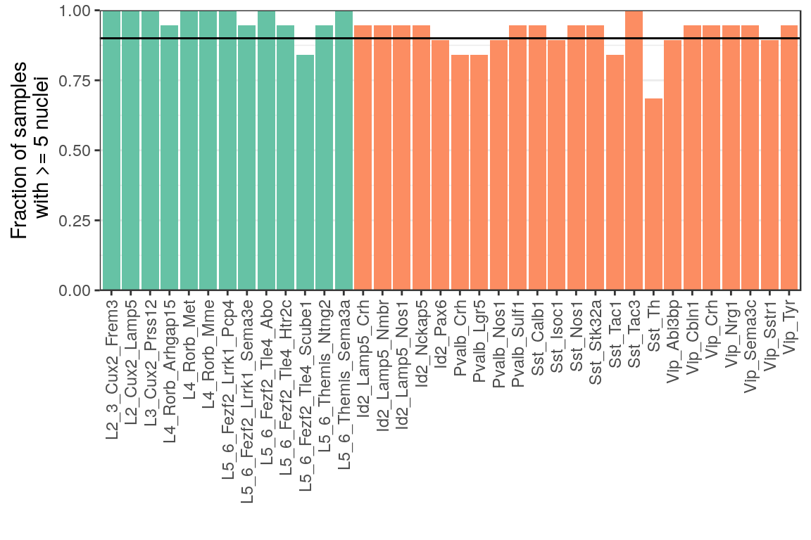
ggsave(outPath("presence_frac_per_type_before_filt.pdf"))p_df <- (1 - colMeans(has_few_cells[!(rownames(has_few_cells) %in% c("C3", "C5", "E5")),])) %>%
as_tibble(rownames="Type") %>%
mutate(NeuronType=neuron_type_per_type[as.character(Type)], Type=factor(Type, levels=type_order))
ggplot(p_df) +
geom_bar(aes(x=Type, y=value, fill=NeuronType), stat="identity") +
geom_hline(aes(yintercept=0.9)) +
scale_fill_brewer(palette="Set2") +
scale_y_continuous(expand=expansion(c(0, 0))) +
labs(x="", y="Fraction of samples\n with >= 5 nuclei") +
theme(legend.position="none", panel.grid.major.x=element_blank(),
axis.text.x=element_text(angle=90, hjust=1, vjust=0.5))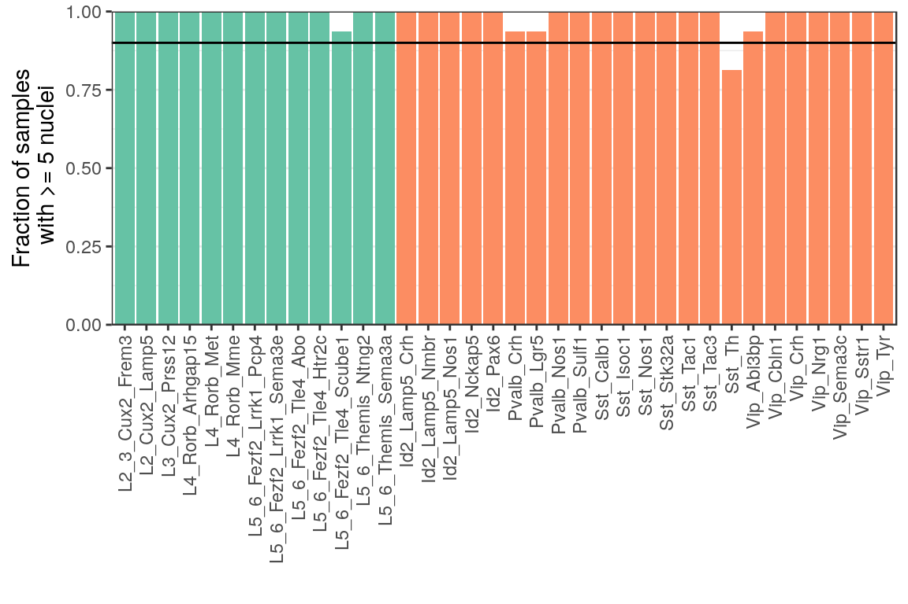
ggsave(outPath("presence_frac_per_type_after_filt.pdf"))n_genes_per_sample <- names(con$samples) %>% setNames(., .) %>%
pblapply(function(n) tibble(Sample=n, NGenes=getNGenes(con$samples[[n]]$misc$rawCounts))) %>%
Reduce(rbind, .) %>% mutate(Condition=condition_per_sample[Sample]) %>%
mutate(Sample=factor(Sample, levels=levels(sample_per_cell)))ggplot(n_genes_per_sample) +
geom_boxplot(aes(x=Sample, y=NGenes, fill=Condition)) +
scale_fill_manual(values=alpha(condition_colors, 0.75)) +
labs(x="", y="Number of genes/nucleus") +
theme(legend.position="none", panel.grid.major.x=element_blank()) +
theme_borders
ggsave(outPath("n_genes_per_sample.pdf"))n_cells_per_type <- annotation %>% split(condition_per_cell[names(.)]) %>% lapply(table)
n_cells_per_type <- names(n_cells_per_type) %>% setNames(., .) %>% lapply(function(n)
n_cells_per_type[[n]] %>% tibble(N=., Type=names(.), Condition=n)) %>%
Reduce(rbind, .) %>% mutate(N=as.integer(N), NeuronType=neuron_type_per_type[Type]) %>%
split(.$NeuronType)
ggs <- lapply(n_cells_per_type, function(df)
ggplot(df) +
geom_bar(aes(x=Type, y=N, fill=Condition, group=Condition), stat="identity", position="dodge") +
scale_fill_manual(values=alpha(condition_colors, 0.75)) +
scale_y_continuous(expand=expand_scale(c(0, 0.05))) +
labs(x="", y="") +
theme(legend.position=c(1, 1.05), legend.justification=c(1, 1), panel.grid.major.x=element_blank(),
axis.text.x=element_text(angle=90, hjust=1, vjust=0.5), legend.title=element_blank(),
legend.background=element_blank(), plot.margin=margin()) +
theme_borders
)
ggs[[1]] %<>% `+`(scale_y_continuous(expand=expansion(c(0, 0.05)), name="Number of nuclei", breaks=c(4000, 8000, 12000)))
cowplot::plot_grid(plotlist=ggs, nrow=1, rel_widths=c(1, 1.5), align="h")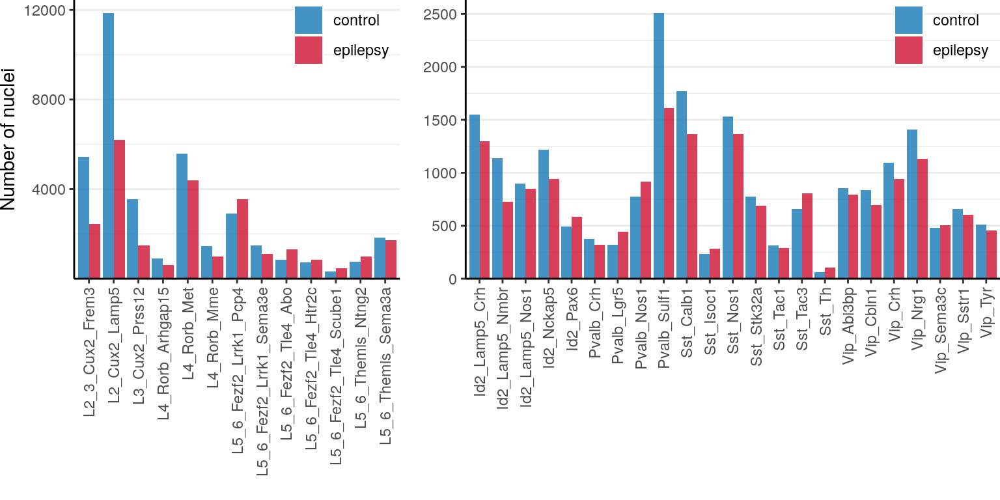
ggsave(outPath("n_cells_per_type.pdf"))Markers
Heatmaps
ex_markers <- c(
# "Slc17a7",
"Cux2", "Rorb", "Themis", "Fezf2", "Pdgfd", "Lamp5", "March1", "Frem3", "Unc5d",
"Lama2", "Prss12", "Col5a2", "Dcc", "Schlap1", "Tox", "Cobll1", "Inpp4b", "Mme", "Plch1",
"Met", "Gabrg1", "Arhgap15", "Grik3", "Ntng2", "Nr4a2", "Dcstamp", "Sema3a", "Lrrk1",
"Tle4", "Arsj", "Pcp4", "Tll1", "Sema3e", "Slit3", "Abo", "Sema5a", "Grin3a", "Htr2c", "Il26", "Card11",
"Kcnip1", "Scube1", "Slc15a5"
) %>% toupper()
c_types <- c(
"L2_Cux2_Lamp5", "L2_3_Cux2_Frem3", "L3_Cux2_Prss12",
"L4_Rorb_Mme", "L4_Rorb_Met", "L4_Rorb_Arhgap15",
"L5_6_Themis_Ntng2", "L5_6_Themis_Sema3a",
"L5_6_Fezf2_Lrrk1_Pcp4", "L5_6_Fezf2_Lrrk1_Sema3e",
"L5_6_Fezf2_Tle4_Abo", "L5_6_Fezf2_Tle4_Htr2c", "L5_6_Fezf2_Tle4_Scube1"
)
ex_annotation <- annotation %>% .[. %in% c_types] %>% factor(levels=c_types)
gg_ex_heatmap_all <- estimateFoldChanges(cm_merged, ex_markers, ex_annotation) %>% pmax(0) %>%
plotGGHeatmap(legend.title="log2 fold-change") + scale_fill_distiller(palette="RdYlBu")
c_types <- c("L2_3_Cux2", "L4_Rorb", "L5_6_Themis", "L5_6_Fezf2")
ex_annotation <- annotation_by_level$l2 %>% .[. %in% c_types] %>% factor(levels=c_types)
gg_ex_heatmap <- estimateFoldChanges(cm_merged, ex_markers, ex_annotation) %>% pmax(0) %>%
plotGGHeatmap(legend.title="log2 fold-change") + scale_fill_distiller(palette="RdYlBu")
ggsave(outPath("ex_markers_heatmap.pdf"), gg_ex_heatmap_all, width=4.5, height=8)
ggsave(outPath("ex_markers_heatmap_sum.pdf"), gg_ex_heatmap, width=2.5, height=8)
gg_ex_heatmap_all
gg_ex_heatmap
inh_markers <- c(
# "Gad1", "Gad2",
"Lhx6", "Sox6", "Adarb2", "Nr2f2", "Pvalb", "Sst", "Vip", "Id2", "Crh",
"Nog", "Lgr5", "Mepe", "Sulf1", "Nos1", "Isoc1", "Calb1", "Hpgd", "Gxylt2", "Stk32a", "Reln",
"Tac1", "Tac3", "Th", "Trhde", "Calb2", "Cck", "Abi3bp", "Hs3st3a1", "Cbln1", "Htr2c", "Oprm1",
"Nrg1", "Sema3c", "Dach2", "Sstr1", "Tyr", "Lamp5", "Lcp2", "Nmbr", "Lhx6", "Nckap5", "Pax6"
) %>% toupper() %>% unique()
c_types <- c("Pvalb", "Sst", "Vip", "Id2")
t_ann <- annotation_by_level$l2 %>% .[. %in% c_types] %>% factor(levels=c_types)
gg_inh_heatmap <- estimateFoldChanges(cm_merged, inh_markers, t_ann) %>% pmax(0) %>%
plotGGHeatmap(legend.title="log2 fold-change") + scale_fill_distiller(palette="RdYlBu")
c_types <- c('Pvalb_Crh', 'Pvalb_Lgr5', 'Pvalb_Nos1', 'Pvalb_Sulf1',
'Sst_Calb1', 'Sst_Isoc1', 'Sst_Nos1', 'Sst_Stk32a', 'Sst_Tac1', 'Sst_Tac3', 'Sst_Th',
'Vip_Abi3bp', 'Vip_Cbln1', 'Vip_Crh', 'Vip_Nrg1', 'Vip_Sema3c', 'Vip_Sstr1', 'Vip_Tyr',
'Id2_Lamp5_Crh', 'Id2_Lamp5_Nmbr', 'Id2_Lamp5_Nos1', 'Id2_Nckap5', 'Id2_Pax6')
t_ann <- annotation %>% .[. %in% c_types] %>% factor(levels=c_types)
gg_inh_heatmap_all <- estimateFoldChanges(cm_merged, inh_markers, t_ann) %>% pmax(0) %>%
plotGGHeatmap(legend.title="log2 fold-change") + scale_fill_distiller(palette="RdYlBu")
ggsave(outPath("inh_markers_heatmap.pdf"), gg_inh_heatmap_all, width=5, height=8)
ggsave(outPath("inh_markers_heatmap_sum.pdf"), gg_inh_heatmap, width=2.5, height=8)
gg_inh_heatmap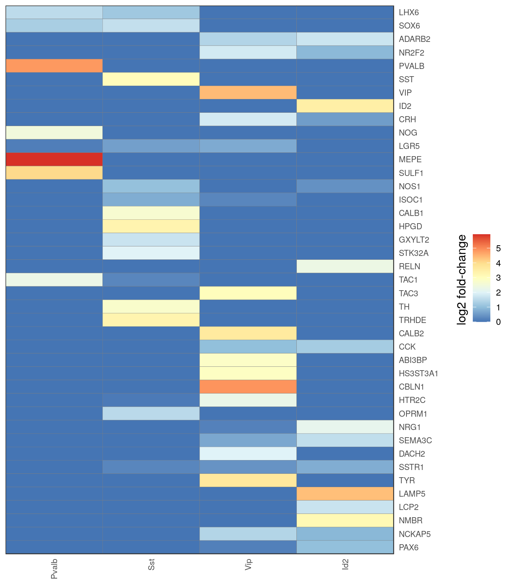
gg_inh_heatmap_all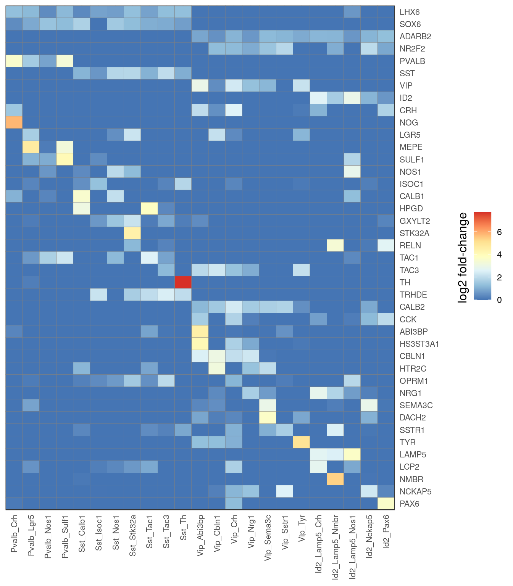
Embeddings
p_genes <- c("Slc17a7", "Gad1", "Gad2", "Cux2", "Rorb", "Themis", "Fezf2", "Pvalb", "Sst", "Vip", "Id2")
gg_ann <- plotAnnotationByLevels(con$embedding, annotation_by_level, size=0.1, font.size=c(4, 4), shuffle.colors=T,
raster=T, raster.dpi=120, raster.width=4, raster.height=4, build.panel=F)[[2]]
gg_genes <- toupper(p_genes) %>% plotGeneExpression(con$embedding, cm_merged, build.panel=F, size=0.1, alpha=0.2,
raster=T, raster.width=11/4, raster.height=8/3, raster.dpi=100)
c(list(gg_ann), gg_genes) %>%
lapply(`+`, theme(axis.title=element_blank(), plot.title=element_blank(), plot.margin=margin())) %>%
cowplot::plot_grid(plotlist=., ncol=4, labels=c("", p_genes), label_fontface="italic", label_x=0.3)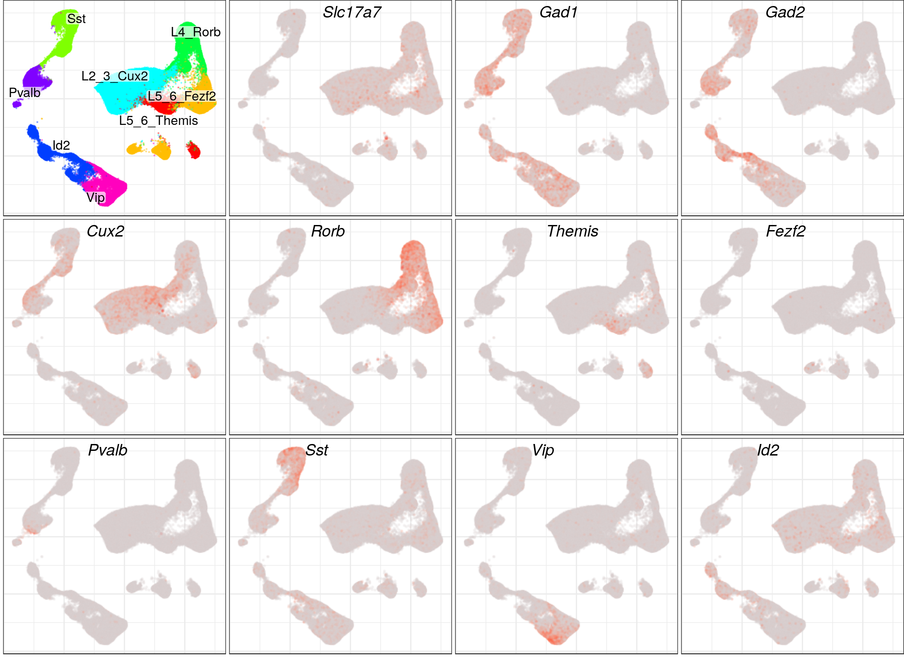
ggsave(outPath("main_markers_emb.pdf"), width=11, height=8)p_genes <- c("Fezf2", "Lrrk1", "Tle4")
p_emb <- annotation_by_level %$% names(l1)[l1 == "Excitatory"] %>% con$embedding[.,]
p_xlims <- quantile(p_emb[,1], c(0.01, 0.99)) %>% `+`(diff(.) * c(-0.05, 0.05))
p_ylims <- quantile(p_emb[,2], c(0.01, 0.99)) %>% `+`(diff(.) * c(-0.05, 0.05))
plotGeneExpression(toupper(p_genes), con$embedding, cm_merged, build.panel=F, size=0.1, alpha=0.2,
groups=annotation_by_level$l1, subgroups="Excitatory",
raster=T, raster.width=8/3, raster.height=8/3, raster.dpi=100) %>%
lapply(`+`, theme(axis.title=element_blank(), plot.title=element_blank(), plot.margin=margin())) %>%
lapply(`+`, lims(x=p_xlims, y=p_ylims)) %>%
cowplot::plot_grid(plotlist=., nrow=1, labels=p_genes, label_fontface="italic")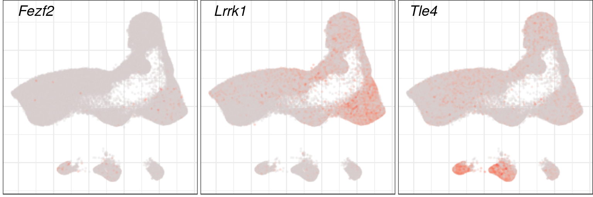
ggsave(outPath("ex_markers_emb.pdf"), width=8, height=8/3)p_genes <- c("Id2", "Lamp5")
p_emb <- annotation_by_level %$% names(l1)[l1 == "Inhibitory"] %>% con$embedding[.,]
p_xlims <- quantile(p_emb[,1], c(0.01, 0.99)) %>% `+`(diff(.) * c(-0.05, 0.05))
p_ylims <- quantile(p_emb[,2], c(0.01, 0.99)) %>% `+`(diff(.) * c(-0.05, 0.05))
plotGeneExpression(toupper(p_genes), con$embedding, cm_merged, build.panel=F, size=0.1, alpha=0.2,
groups=annotation_by_level$l1, subgroups="Inhibitory",
raster=T, raster.width=8/3, raster.height=8/3, raster.dpi=100) %>%
lapply(`+`, theme(axis.title=element_blank(), plot.title=element_blank(), plot.margin=margin())) %>%
lapply(`+`, lims(x=p_xlims, y=p_ylims)) %>%
cowplot::plot_grid(plotlist=., nrow=1, labels=p_genes, label_fontface="italic")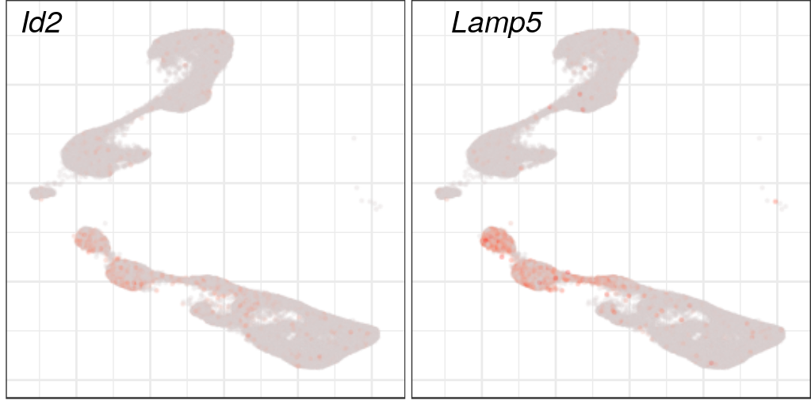
ggsave(outPath("inh_markers_emb.pdf"), width=2*8/3, height=8/3)Key marker levels
con_filt <- read_rds(CachePath("con_filt_samples.rds"))p_dfs <- c("CNR1", "GAD1", "GAD2") %>%
prepareExpressionDfs(con_filt$samples, annotation, neuron.types=neuron_type_per_type,
condition.per.sample=condition_per_sample)
ggs <- lapply(p_dfs, averageGeneDfBySamples) %>% lapply(plotExpressionAveraged, text.size=10) %>%
lapply(`[[`, 1) %>%
lapply(`+`, theme(legend.title=element_blank(), legend.position=c(1, 1.03),
legend.justification=c(1, 1), legend.box.background=element_blank())) %>%
lapply(`+`, scale_color_manual(values=c("#0571b0", "#ca0020")))
ggs <- names(ggs) %>% setNames(., .) %>% lapply(function(n)
ggs[[n]] + ggplot2::annotate("Text", x=1, y=0.9, label=n, vjust=1, hjust=0))
for (n in names(ggs)) {
ggsave(outPath(paste0("gene_", n, ".pdf")), ggs[[n]], width=6, height=4)
}
ggs$CNR1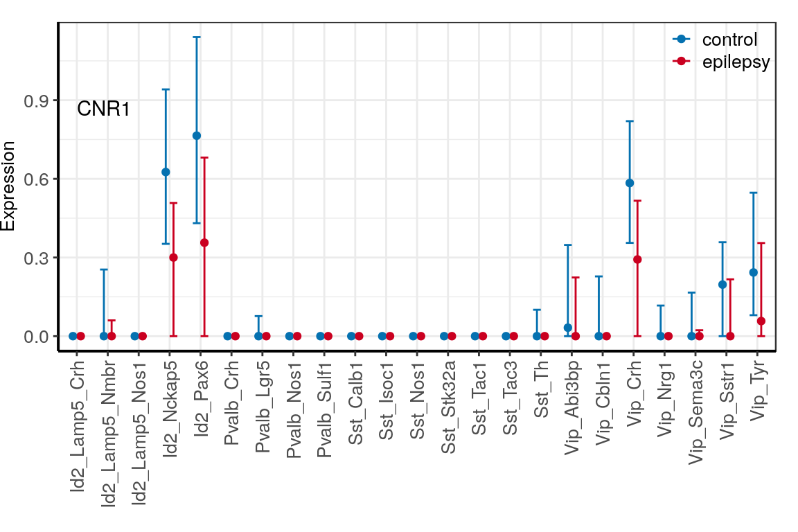
$GAD1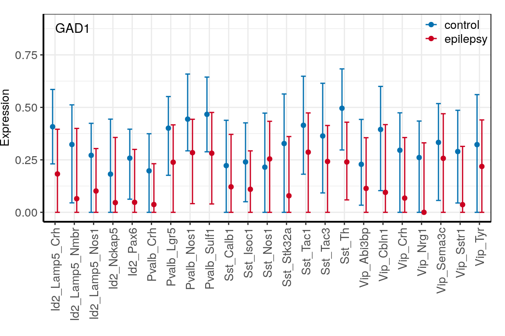
$GAD2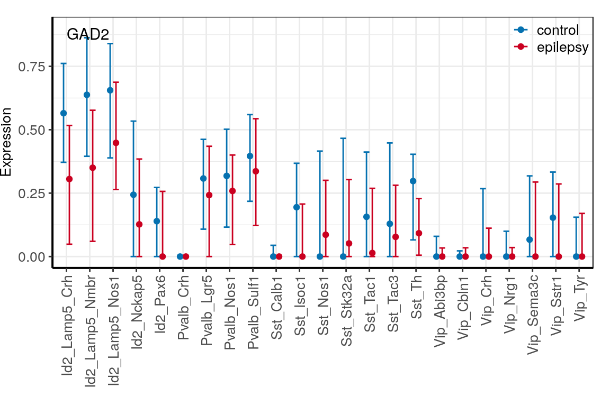
data.frame(value=unlist(sessioninfo::platform_info()))| value | |
|---|---|
| version | R version 3.5.1 (2018-07-02) |
| os | Ubuntu 18.04.2 LTS |
| system | x86_64, linux-gnu |
| ui | X11 |
| language | (EN) |
| collate | en_US.UTF-8 |
| ctype | en_US.UTF-8 |
| tz | America/New_York |
| date | 2020-07-08 |
as.data.frame(sessioninfo::package_info())[c('package', 'loadedversion', 'date', 'source')]| package | loadedversion | date | source | |
|---|---|---|---|---|
| AnnotationDbi | AnnotationDbi | 1.44.0 | 2018-10-30 | Bioconductor |
| ape | ape | 5.3 | 2019-03-17 | CRAN (R 3.5.1) |
| assertthat | assertthat | 0.2.1 | 2019-03-21 | CRAN (R 3.5.1) |
| backports | backports | 1.1.5 | 2019-10-02 | CRAN (R 3.5.1) |
| base64enc | base64enc | 0.1-3 | 2015-07-28 | CRAN (R 3.5.1) |
| beeswarm | beeswarm | 0.2.3 | 2016-04-25 | CRAN (R 3.5.1) |
| Biobase | Biobase | 2.42.0 | 2018-10-30 | Bioconductor |
| BiocGenerics | BiocGenerics | 0.28.0 | 2018-10-30 | Bioconductor |
| BiocManager | BiocManager | 1.30.10 | 2019-11-16 | CRAN (R 3.5.1) |
| bit | bit | 1.1-15.2 | 2020-02-10 | CRAN (R 3.5.1) |
| bit64 | bit64 | 0.9-7 | 2017-05-08 | CRAN (R 3.5.1) |
| blob | blob | 1.2.1 | 2020-01-20 | CRAN (R 3.5.1) |
| brew | brew | 1.0-6 | 2011-04-13 | CRAN (R 3.5.1) |
| broom | broom | 0.5.5 | 2020-02-29 | CRAN (R 3.5.1) |
| Cairo | Cairo | 1.5-11 | 2020-03-09 | CRAN (R 3.5.1) |
| callr | callr | 3.4.2 | 2020-02-12 | CRAN (R 3.5.1) |
| CellAnnotatoR | CellAnnotatoR | 0.2.0 | 2020-05-12 | Github (khodosevichlab/CellAnnotatoR@dde7b22) |
| cellranger | cellranger | 1.1.0 | 2016-07-27 | CRAN (R 3.5.1) |
| cli | cli | 2.0.2 | 2020-02-28 | CRAN (R 3.5.1) |
| colorspace | colorspace | 1.4-1 | 2019-03-18 | CRAN (R 3.5.1) |
| conos | conos | 1.3.0 | 2020-05-12 | local |
| cowplot | cowplot | 1.0.0 | 2019-07-11 | CRAN (R 3.5.1) |
| crayon | crayon | 1.3.4 | 2017-09-16 | CRAN (R 3.5.1) |
| data.table | data.table | 1.12.8 | 2019-12-09 | CRAN (R 3.5.1) |
| dataorganizer | dataorganizer | 0.1.0 | 2019-11-08 | local |
| DBI | DBI | 1.1.0 | 2019-12-15 | CRAN (R 3.5.1) |
| dbplyr | dbplyr | 1.4.2 | 2019-06-17 | CRAN (R 3.5.1) |
| dendextend | dendextend | 1.13.4 | 2020-02-28 | CRAN (R 3.5.1) |
| desc | desc | 1.2.0 | 2018-05-01 | CRAN (R 3.5.1) |
| devtools | devtools | 2.2.2 | 2020-02-17 | CRAN (R 3.5.1) |
| digest | digest | 0.6.25 | 2020-02-23 | CRAN (R 3.5.1) |
| dplyr | dplyr | 0.8.5 | 2020-03-07 | CRAN (R 3.5.1) |
| ellipsis | ellipsis | 0.3.0 | 2019-09-20 | CRAN (R 3.5.1) |
| Epilepsy19 | Epilepsy19 | 0.0.0.9000 | 2019-10-15 | local |
| evaluate | evaluate | 0.14 | 2019-05-28 | CRAN (R 3.5.1) |
| fansi | fansi | 0.4.1 | 2020-01-08 | CRAN (R 3.5.1) |
| farver | farver | 2.0.3 | 2020-01-16 | CRAN (R 3.5.1) |
| fastmap | fastmap | 1.0.1 | 2019-10-08 | CRAN (R 3.5.1) |
| forcats | forcats | 0.5.0 | 2020-03-01 | CRAN (R 3.5.1) |
| fs | fs | 1.3.2 | 2020-03-05 | CRAN (R 3.5.1) |
| generics | generics | 0.0.2 | 2018-11-29 | CRAN (R 3.5.1) |
| ggbeeswarm | ggbeeswarm | 0.6.0 | 2018-10-16 | Github (eclarke/ggbeeswarm@fb85521) |
| ggplot2 | ggplot2 | 3.3.0 | 2020-03-05 | CRAN (R 3.5.1) |
| ggrastr | ggrastr | 0.1.7 | 2018-12-04 | Github (VPetukhov/ggrastr@203d5cc) |
| ggrepel | ggrepel | 0.8.2 | 2020-03-08 | CRAN (R 3.5.1) |
| ggtree | ggtree | 1.99.1 | 2019-10-18 | Github (YuLab-SMU/ggtree@e8f6f87) |
| git2r | git2r | 0.26.1 | 2019-06-29 | CRAN (R 3.5.1) |
| glue | glue | 1.3.2 | 2020-03-12 | CRAN (R 3.5.1) |
| gridExtra | gridExtra | 2.3 | 2017-09-09 | CRAN (R 3.5.1) |
| gtable | gtable | 0.3.0 | 2019-03-25 | CRAN (R 3.5.1) |
| haven | haven | 2.2.0 | 2019-11-08 | CRAN (R 3.5.1) |
| highr | highr | 0.8 | 2019-03-20 | CRAN (R 3.5.1) |
| hms | hms | 0.5.3 | 2020-01-08 | CRAN (R 3.5.1) |
| htmltools | htmltools | 0.4.0 | 2019-10-04 | CRAN (R 3.5.1) |
| httpuv | httpuv | 1.5.2 | 2019-09-11 | CRAN (R 3.5.1) |
| httr | httr | 1.4.1 | 2019-08-05 | CRAN (R 3.5.1) |
| igraph | igraph | 1.2.4.2 | 2019-11-27 | CRAN (R 3.5.1) |
| IRanges | IRanges | 2.16.0 | 2018-10-30 | Bioconductor |
| irlba | irlba | 2.3.3 | 2019-02-05 | CRAN (R 3.5.1) |
| jsonlite | jsonlite | 1.6.1 | 2020-02-02 | CRAN (R 3.5.1) |
| knitr | knitr | 1.28 | 2020-02-06 | CRAN (R 3.5.1) |
| labeling | labeling | 0.3 | 2014-08-23 | CRAN (R 3.5.1) |
| later | later | 1.0.0 | 2019-10-04 | CRAN (R 3.5.1) |
| lattice | lattice | 0.20-40 | 2020-02-19 | CRAN (R 3.5.1) |
| lazyeval | lazyeval | 0.2.2 | 2019-03-15 | CRAN (R 3.5.1) |
| lifecycle | lifecycle | 0.2.0 | 2020-03-06 | CRAN (R 3.5.1) |
| lubridate | lubridate | 1.7.4 | 2018-04-11 | CRAN (R 3.5.1) |
| magrittr | magrittr | 1.5 | 2014-11-22 | CRAN (R 3.5.1) |
| MASS | MASS | 7.3-51.5 | 2019-12-20 | CRAN (R 3.5.1) |
| Matrix | Matrix | 1.2-18 | 2019-11-27 | CRAN (R 3.5.1) |
| memoise | memoise | 1.1.0 | 2017-04-21 | CRAN (R 3.5.1) |
| mime | mime | 0.9 | 2020-02-04 | CRAN (R 3.5.1) |
| modelr | modelr | 0.1.6 | 2020-02-22 | CRAN (R 3.5.1) |
| munsell | munsell | 0.5.0 | 2018-06-12 | CRAN (R 3.5.1) |
| nlme | nlme | 3.1-145 | 2020-03-04 | CRAN (R 3.5.1) |
| org.Hs.eg.db | org.Hs.eg.db | 3.7.0 | 2019-10-08 | Bioconductor |
| pagoda2 | pagoda2 | 0.1.1 | 2019-12-10 | local |
| pbapply | pbapply | 1.4-2 | 2019-08-31 | CRAN (R 3.5.1) |
| pheatmap | pheatmap | 1.0.12 | 2019-01-04 | CRAN (R 3.5.1) |
| pillar | pillar | 1.4.3 | 2019-12-20 | CRAN (R 3.5.1) |
| pkgbuild | pkgbuild | 1.0.6 | 2019-10-09 | CRAN (R 3.5.1) |
| pkgconfig | pkgconfig | 2.0.3 | 2019-09-22 | CRAN (R 3.5.1) |
| pkgload | pkgload | 1.0.2 | 2018-10-29 | CRAN (R 3.5.1) |
| plyr | plyr | 1.8.6 | 2020-03-03 | CRAN (R 3.5.1) |
| prettyunits | prettyunits | 1.1.1 | 2020-01-24 | CRAN (R 3.5.1) |
| processx | processx | 3.4.2 | 2020-02-09 | CRAN (R 3.5.1) |
| promises | promises | 1.1.0 | 2019-10-04 | CRAN (R 3.5.1) |
| ps | ps | 1.3.2 | 2020-02-13 | CRAN (R 3.5.1) |
| purrr | purrr | 0.3.3 | 2019-10-18 | CRAN (R 3.5.1) |
| R6 | R6 | 2.4.1 | 2019-11-12 | CRAN (R 3.5.1) |
| RColorBrewer | RColorBrewer | 1.1-2 | 2014-12-07 | CRAN (R 3.5.1) |
| Rcpp | Rcpp | 1.0.4 | 2020-03-17 | CRAN (R 3.5.1) |
| readr | readr | 1.3.1 | 2018-12-21 | CRAN (R 3.5.1) |
| readxl | readxl | 1.3.1 | 2019-03-13 | CRAN (R 3.5.1) |
| remotes | remotes | 2.1.1 | 2020-02-15 | CRAN (R 3.5.1) |
| reprex | reprex | 0.3.0 | 2019-05-16 | CRAN (R 3.5.1) |
| reshape2 | reshape2 | 1.4.3 | 2017-12-11 | CRAN (R 3.5.1) |
| rjson | rjson | 0.2.20 | 2018-06-08 | CRAN (R 3.5.1) |
| rlang | rlang | 0.4.5 | 2020-03-01 | CRAN (R 3.5.1) |
| rmarkdown | rmarkdown | 2.1 | 2020-01-20 | CRAN (R 3.5.1) |
| Rook | Rook | 1.1-1 | 2014-10-20 | CRAN (R 3.5.1) |
| rprojroot | rprojroot | 1.3-2 | 2018-01-03 | CRAN (R 3.5.1) |
| RSQLite | RSQLite | 2.2.0 | 2020-01-07 | CRAN (R 3.5.1) |
| rstudioapi | rstudioapi | 0.11 | 2020-02-07 | CRAN (R 3.5.1) |
| rvcheck | rvcheck | 0.1.8 | 2020-03-01 | CRAN (R 3.5.1) |
| rvest | rvest | 0.3.5 | 2019-11-08 | CRAN (R 3.5.1) |
| S4Vectors | S4Vectors | 0.20.1 | 2018-11-09 | Bioconductor |
| scales | scales | 1.1.0 | 2019-11-18 | CRAN (R 3.5.1) |
| sccore | sccore | 0.1 | 2020-04-24 | Github (hms-dbmi/sccore@2b34b61) |
| sessioninfo | sessioninfo | 1.1.1 | 2018-11-05 | CRAN (R 3.5.1) |
| shiny | shiny | 1.4.0.2 | 2020-03-13 | CRAN (R 3.5.1) |
| stringi | stringi | 1.4.6 | 2020-02-17 | CRAN (R 3.5.1) |
| stringr | stringr | 1.4.0 | 2019-02-10 | CRAN (R 3.5.1) |
| testthat | testthat | 2.3.2 | 2020-03-02 | CRAN (R 3.5.1) |
| tibble | tibble | 2.1.3 | 2019-06-06 | CRAN (R 3.5.1) |
| tidyr | tidyr | 1.0.2 | 2020-01-24 | CRAN (R 3.5.1) |
| tidyselect | tidyselect | 1.0.0 | 2020-01-27 | CRAN (R 3.5.1) |
| tidytree | tidytree | 0.3.2 | 2020-03-12 | CRAN (R 3.5.1) |
| tidyverse | tidyverse | 1.3.0 | 2019-11-21 | CRAN (R 3.5.1) |
| treeio | treeio | 1.9.3 | 2019-10-18 | Github (GuangchuangYu/treeio@4a1c993) |
| triebeard | triebeard | 0.3.0 | 2016-08-04 | CRAN (R 3.5.1) |
| urltools | urltools | 1.7.3 | 2019-04-14 | CRAN (R 3.5.1) |
| usethis | usethis | 1.5.1 | 2019-07-04 | CRAN (R 3.5.1) |
| vctrs | vctrs | 0.2.4 | 2020-03-10 | CRAN (R 3.5.1) |
| vipor | vipor | 0.4.5 | 2017-03-22 | CRAN (R 3.5.1) |
| viridis | viridis | 0.5.1 | 2018-03-29 | CRAN (R 3.5.1) |
| viridisLite | viridisLite | 0.3.0 | 2018-02-01 | CRAN (R 3.5.1) |
| whisker | whisker | 0.4 | 2019-08-28 | CRAN (R 3.5.1) |
| withr | withr | 2.1.2 | 2018-03-15 | CRAN (R 3.5.1) |
| workflowr | workflowr | 1.6.1 | 2020-03-11 | CRAN (R 3.5.1) |
| xfun | xfun | 0.12 | 2020-01-13 | CRAN (R 3.5.1) |
| xml2 | xml2 | 1.2.5 | 2020-03-11 | CRAN (R 3.5.1) |
| xtable | xtable | 1.8-4 | 2019-04-21 | CRAN (R 3.5.1) |
| yaml | yaml | 2.2.1 | 2020-02-01 | CRAN (R 3.5.1) |